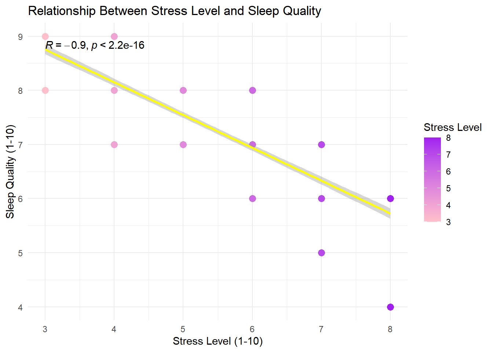
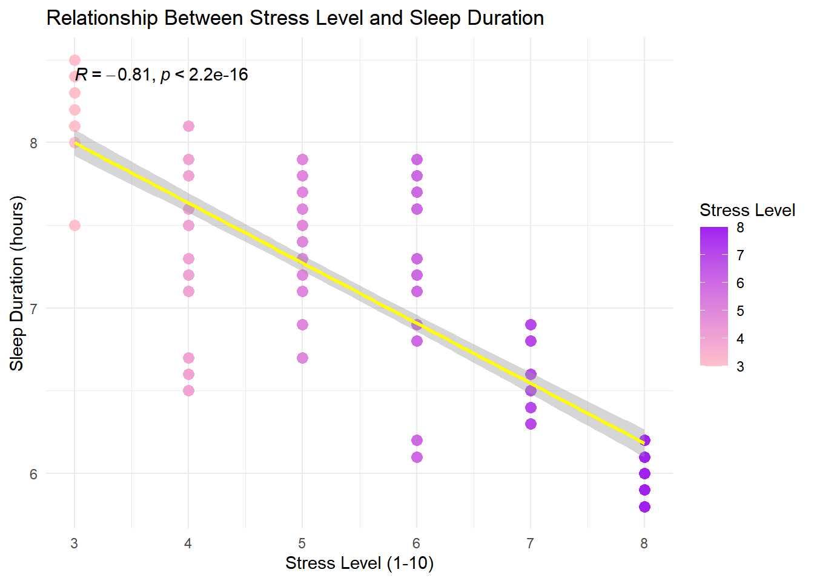
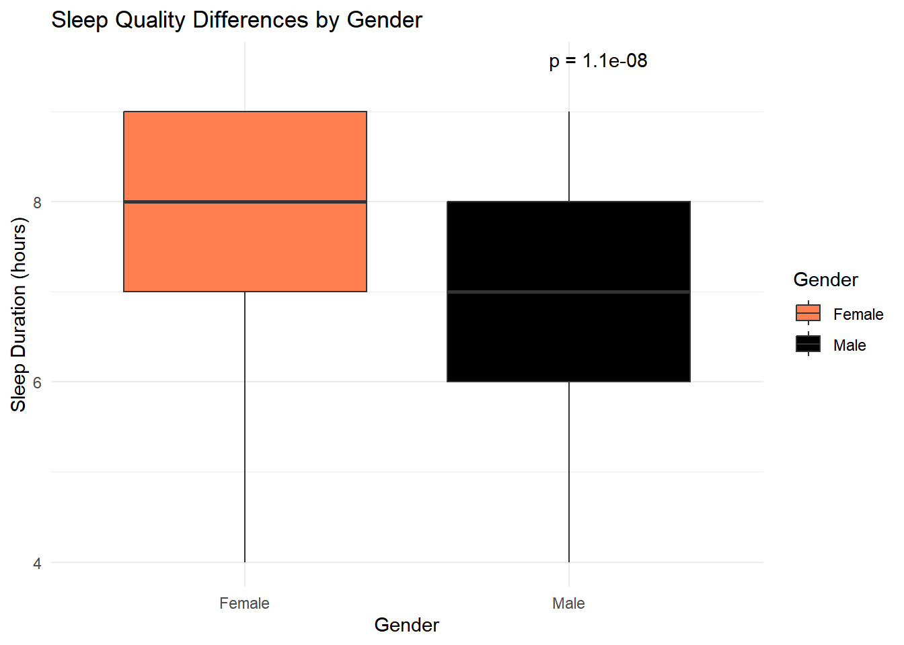
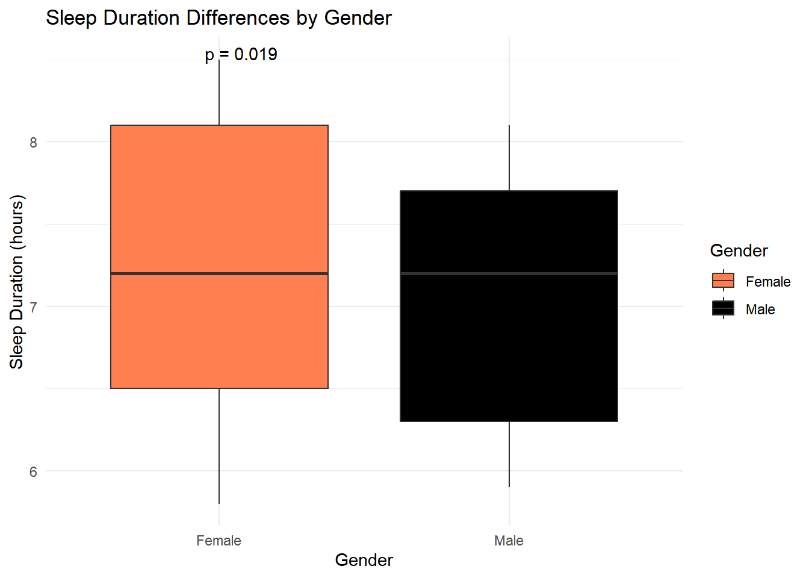

Final Report: Sleep Quality and Lifestyle Analysis
Author
Amber Memon
Published
June 4, 2026
Final Report: [Impact of Physical Activity and Stress Levels on Sleep Quality and Sleep Duration]
Introduction
Sleeping is a biological phenomenon that helps in the maintenance of health, cognition, emotions, and general wellness. Adequate sleep time and good sleep quality are important determinants of quality of life and well-being. Several studies have indicated that psychological stress has an impact on sleep patterns by decreasing the quality of sleep and sleep duration. Moreover, physical activity has been known to have a role in the regulation of sleep through improving the quality of sleep and the general well-being. The influence of stress levels and physical activity on the quality of sleep may be different among individuals depending on lifestyle and demographics like gender.
Methods
I’m using data obtained from Kaggle for sleep health on lifestyle factors.
Results
On average, participants slept about 7.1 hours per night. Sleep duration ranged from 5.8 to 8.5 hours.
The average sleep quality score was about 7.3 out of 10, suggesting generally good sleep quality among participants.
Participants had an average physical activity level of 59.2 minutes/day
The average stress level was 5.4.
Participants walked about 6,817 steps per day on average.
Gender Distribution Female: 185 participants Male: 189 participants
Data Loading
# Load a librarylibrary(ggplot2)library(dplyr)library(cowplot)library(tidyverse)library(janitor)library(ggpubr)# Load datasleep <-read.csv("Sleep_health_and_lifestyle_dataset.csv")#Check datastr(sleep)
##==========================================================## Question 1: Does physical activity affect sleep?## =========================================================## Easy method: split people into "Low" vs "High" activity groups## using the median, then just compare the average sleep quality## and duration between the two groups.sleep = sleep |>mutate(activity_group =if_else(physical_activity_level >=median(physical_activity_level),"High Activity", "Low Activity"))## Plot: average sleep quality by activity groupggplot(sleep,aes(x = activity_group,y = quality_of_sleep,fill = activity_group)) +geom_boxplot() +stat_compare_means(method ="t.test",label ="p.signif" ) +labs(title ="Sleep Quality by Physical Activity Group",x ="Activity Group",y ="Sleep Quality (1-10)" ) +theme_minimal()
# =========================================================## Question 3: Does stress level affect sleep?## =========================================================#Plot the graph for relationship between stress level and sleep qualityggplot(sleep, aes(x = stress_level,y = quality_of_sleep,color = stress_level)) +geom_point(size =3) +geom_smooth(method ="lm",se =TRUE,color ="yellow") +scale_color_gradient(low ="pink",high ="purple" ) +stat_cor(method ="pearson") +labs(title ="Relationship Between Stress Level and Sleep Quality",x ="Stress Level (1-10)",y ="Sleep Quality (1-10)",color ="Stress Level" ) +theme_minimal()

#Plot the graph for relationship between stress level and sleep durationggplot(sleep, aes(x = stress_level,y = sleep_duration,color = stress_level)) +geom_point(size =3) +geom_smooth(method ="lm",se =TRUE,color ="yellow") +scale_color_gradient(low ="pink",high ="purple" ) +stat_cor(method ="pearson") +labs(title ="Relationship Between Stress Level and Sleep Duration",x ="Stress Level (1-10)",y ="Sleep Duration (hours)",color ="Stress Level" ) +theme_minimal()

GENDER DIFFERENCE AND SLEEP
#gender difference in sleep durationggplot(sleep, aes(x = gender, y = quality_of_sleep, fill = gender)) +geom_boxplot() +stat_compare_means(method ="t.test",label ="p.format",label.x =2,label.y =9.5 ) +scale_fill_manual(values =c("Female"="coral","Male"="black" ) ) +labs(title ="Sleep Quality Differences by Gender",x ="Gender",y ="Sleep Duration (hours)",fill ="Gender" ) +theme_minimal()

#gender difference in sleep durationggplot(sleep, aes(x = gender, y = sleep_duration, fill = gender)) +geom_boxplot() +stat_compare_means(method ="t.test",label ="p.format" ) +scale_fill_manual(values =c("Female"="coral","Male"="black" ) ) +labs(title ="Sleep Duration Differences by Gender",x ="Gender",y ="Sleep Duration (hours)",fill ="Gender" ) +theme_minimal()

CONCLUSION;
Higher Physical activity increases sleep quality and duration Higher Daily steps increases sleep quality and duration Higher stress levels lower sleep quality and duration Females tend to sleep more and have good quality sleep than males.